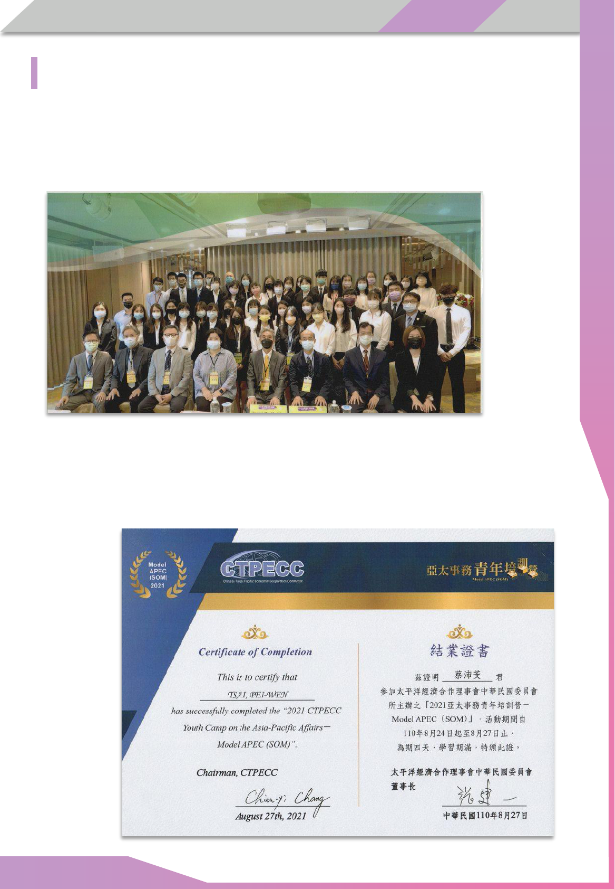

個人資料
學習計畫
國立陽明交通大學
百川學士學位學程
申請人：蔡沛芠
蜂巢數據科技股份有限公司（阿龜微氣候）2021 年 至今
助理工程師及專案企劃
撰寫食農教育、天氣預測與肥料系統企劃書，並進行田野調查
利用 Vue 協助開發系統模板並導入
LINE Notify 至現有系統中
蔡沛芠 TSAI PEI-WEN
目前正在 Gap Year 的我擁有許多跨領域創新的經
驗，能夠將自己的各項能力融入正在做的事。我希
望未來能在大學期間深化自己的能力，成為一位真
正的跨領域人才。
品牌創意有限公司 2019 年至今
數據分析與自動化流程設計
利用 Python 爬取蝦皮拍賣數據，結合
R 語言與倉儲數據進行數據分析
透過 APP Script 與
LINE Notify 為
160 坪倉庫進行自動化流程設計
好交易尋寶屋有限公司（藏舊尋寶屋） 2019 年至今
公司線上轉型負責人
開發 SHOPLINE 系統與
LINE Bot 進行線上骨董展示
導入 LINE 機器人與自動化流程，將公司項目月營收提升 200 萬
三發教育基金會 人各有痣暑期專案實習 2021 年 六月至九月
行銷企劃實習生
與七個組織合作，協助產生教育組織懶人包，觸及人數破萬人
邀請爆學力舉辦學習講座，經營 Facebook 社團分享學習資源
個
人
簡
歷
I
Google
數位人才探索計畫 2021 年
由 Google 培訓的數位廣告領域專才
國際太空站
KIBO 機器人程式設計挑戰賽 2020 年
台灣預賽 精準度第二名 總排名第六名
使用 JAVA 語言設計 AR tag 模塊，並利用
Sketchup 建立環境模型
中國材料科學學會年會 2019 年
高中職生材料科技海報競賽 優選
使用白玉蝸牛實驗並獲取數據，判斷市售蝸牛黏液服務的可行性
科技部尋找資安女捷思 2021 年
創意發想賽 全國第二名 獲總統接見
領導女同學做出資安問題動畫，並以聲紋為主題比較現有技術差異
八連溪農場 2019 年
建置網站及 LINE Bot 協助小農行銷，售出
150 斤柚子
寶藏巖國際藝術村 2021 年
藝工隊成員，環境教育專案講師
COSCUP 開源人年會 2021 年
擔任場務組長，籌備萬人研討會並管理約
50 人團隊
個
人
簡
歷
II
個人成長歷程
個
人
成
長
歷
程
III
吹泡泡的少女 ──
自動種植器，夭夭杯的誕生
可能是運氣使然，我的童年沒有什麼煩惱。所以我總覺得大家也該快快樂樂地
活在世上，我無法理解人們消極的態度、無能為力所以選擇放棄。種種無奈在我的
快樂國度裡就像外星人，只有聽說、沒有看過，無法想像碰觸到難過的感覺，讓我
有許多不切實際的行動和想法－－如泡泡一樣夢幻又脆弱。
第一個泡泡出現在升高中的暑假，在網路上看見影片裡的東西很厲害。便自己
學習程式語言、買工具、數據分析，把魚缸改造成植物種植器，還升級成了縮小版
的夭夭杯。雖然過程很有趣，也很得意自己做出的成果，但毫無市場價值的它最終
還是進了垃圾桶。
自動馬達 ── 成果源自無止境的探索
高中生活裡，泡泡就像裝置了自動馬達一樣無止盡的被製造，並胡亂地被荊棘
刺破。我因為這些愚蠢的熱情增加許多機會，但也在前進中慢慢理解現實。
因為有趣，不計成本的投入從未接觸過的程式，與朋友堆砌出
LINE bot ，幸運
地得到數萬元收入。乘著幸運的風，開始不切實際的募資計畫，雖然不了了之，但
也讓我們被看見。
從實作中學習 ──
專案、實習與競賽
我與藏舊尋寶屋合作，協助公司經營月營收破千萬的業務；因為想挑戰自己，
奮不顧身地把履歷投遞到連資格都不符合的職位，並獲得與理想公司「阿龜微氣候」
合作數個百萬級別專案的機會。
用蝸牛做實驗，去材料科學學會年會展出化材海報；為國際太空站開發機器人
程式；帶領女同學們進行資安競賽，獲得總統接見；參與資訊社群，籌備萬人參與
的研討會；不間斷的投入志工活動，跑去國際藝術村和藝術家們做環境教育、餵食
貓咪。
美好幻想破裂 ── 從挫折中重新認識自己
從農業、資訊到教育領域，從行銷、志工到領導團隊，我在這些「快樂」的事
情中試圖把泡泡們吹得更大。但當我好不容易在世界上留下腳印時，卻會發現自己
可能才剛離開起點。世界之大，我開始理解無能為力的無奈。
為了證明自己是特別的，我去投遞國教署的青少年諮詢委員。備取後，反倒不
甘心地投入從未接觸的領域；去三發教育基金會實習，過程中反而看見了夥伴的社
畜生活；想讓生活更「快樂」所以學了各種奇怪的技能，但面對社會競爭時，才驚
覺自己像是霍爾的城堡，看起來很充實，但內部竟是些沒用的東西；為了滿足對生
活的期待，想要 Gap Year ，但當自己申請了英國工作簽證、開始規劃這一年事項
後，才被 COVID-19 與現實打回自我迷思的漩渦中。我以前還以為那些人生血淚和
虎姑婆一樣是嚇唬我呢！
回頭審視自己 ──
從零開始
→ 今日的我
這幾年裡，我開始看到一些現實，起初潛意識的逃避，想保留著像小孩子的自
己，試圖說服自己泡泡裡的世界就是全部。後來想想，這些泡泡本來就會破掉，可
是只要手上拿著泡泡水和吸管，快樂就是自己定義的。
雖然世界並非想像中的完美，但我發現自己還是在長大，在 COSCUP
中從組
員到接下組長，領導團隊、籌備研討會；在骨董公司裡，從一開始的小型行銷機器
人，到之後學會運用工具，自動化上架、即時報表，開始產生真實的價值；在阿龜
微氣候，最初還需要執行長和技術長教我設計預算、Vue 語言，到現在可以獨力呈
現出計畫的細節、畫出使用者介面和程式系統架構。
個
人
成
長
歷
程
IV
向前走，向後看
── 伴著能力與回憶成為更特別的自己
電影裡的楚門都為自己打開那扇門了，更何況我也許只是個會被替換掉的小齒
輪呢？泡泡乍看下是透明的，但端詳後便能夠發現折射出的七彩。泡泡們雖然破裂
了，但現在的我明白過程中留下的能力與回憶會和我一起成長。
不畏挑戰
只有瞭解過才有資格說做不到
在阿龜，當時因我沒有專業農業背景而失去實習機會，但開始
合作後我反倒從軟硬體設備串連到農作資料庫都從頭了解。才
能有深度的寫出後來的企劃書和開發模板。
尋找並解決問題
優化可以讓計畫擁有更大效益
為好交易尋寶屋導入自動化流程，改變了原先手記帳本的方式。
不僅能把交易紀錄歸檔，還能做數據分析。上線後的數個月內營
業額從 800 萬逐步提升至
1000 萬。
自主學習
整座城市都是我的教室
做夭夭杯時，我去圖書館找書學習 Arduino
；走去花市買種子，
了解種植技巧；去網路上購買感測器，了解接線問題。為了觀
察實驗數據，學習用程式語言分析。
溝通
傾聽、了解與協調
在三發教育基金會中，我必須與基金會、夥伴和其他組織做協
調，因為有效的溝通，三方才能開始進行有成效的推廣，使我
的 KPI 超出另一位夥伴不少。
耐挫力
青諮會的備取是我這半年投入教育的動機，後來我錄取了審議
民主主持人培訓，也以教育為主題進到教育部提案。甚至開始
籌備營隊和分享自己的經驗給學生。
盡全力才會知道是失敗或成功
五
力
圖
V
五力圖
申請動機
我想蛻變得天真又優秀
高中時，因離家近選擇社區高中，所以周遭缺少了壓力和突破。雖然高一、二時
已做了許多事，但每個獨立的專案更偏向自己的獨角戲，讓我仍能沉溺在自己的快樂
世界裡。但這半年間認識了許多前輩，也和特別的朋友一起做了很多事，讓我開始反
思自己的價值。
與他們的相處過程中，我看見了知識的資本、規劃的意義，還有資源與人脈的重
要性。所以我想學會如何聰明地在感興趣的領域間探索，並提升做事的性價比。我仍
想保有追求快樂的動力，因為我希望自己不會因匆忙而遺忘初心。但是現實與理想中
的衝突反倒讓我自卑、難過，就像是幻想破滅了。現實逼迫我承認自己的不足，否則
我也不用如此憧憬他們。
這是我出生以來，最深的低潮。我甚至曾想過，「快樂」是我的累贅，但這半年
間更多的機遇反倒包裹住了那些天真的快樂，他們不僅沒被我丟棄，還被浮出的期許
和目標給包住了。也許有一天，我也會被現實和生活給壓破，可是我想繼續帶著我的
天真碰撞出新的機遇。
和很多教授老師聊天過後，他們都稱讚我有跨界實踐的能力。我認為解決問題絕
對不是單一領域即可解決。所以我期望延伸目前的能力，在這裡提升我的資訊與商業
能力，並探索自己的更多可能性。
交通大學為一所頂尖綜合大學，因此交大的師資、環境等都相當適合我。但除了
知識上的追求，我也認為現在的我缺少了社會經驗和管理能力，當面對許多現實問題
時，我還是無法看清所有面向。而在管理中，不論是時程規劃、人資運用或是人生目
標，我都缺乏遠見，長期下來可能短視近利，導致虎頭蛇尾。
所以我也期許自己能在大學中，與優秀的人們一起參加活動，組織一個大家都樂
在其中的新團隊，並在其中逐漸成長。身在頂尖學府，同儕都充滿了創意與能力。但
他們可能在書海中缺席了許多童年快樂，所以我想在這個環境中，試著用我的創新、
跨界實踐，讓大家體驗走出舒適圈的美好。
申
請
動
機
VI
學習計畫
VII
Gap Year
～ 入學前
選擇 Gap Year 最主要的原因就是：我不知道這世界長怎樣，也不了解自己未來
該做什麼，就像迷航在外太空，一片漆黑但又隱隱透著星光。
所以 Gap Year 這年我想嘗試更多先前未接觸過的事情，並在過往的領域做出延
伸。而在大學四年期間，因為學制的彈性與包容，我想針對探索中，接觸到的事物做
更為聚焦的學習。
學
習
計
畫
想做的事 說明
Vue 程式語言
目前於阿龜微氣候參與台大教授的研究計畫，負責開發種
植劇本預測的前端，所以希望精進自己的程式能力，未來
也有助於我進行數據分析及使用者介面設計。
UI / UX
高三時在好交易尋寶屋的專案，因為考量時間與能力種種
因素，選擇運用別人所撰寫的工具，所以現在想要自己開
發其他工具，讓模式更優化。
101 個故事
想在這年踏出自己的舒適圈，於研討會上及打工換宿期間
傾聽 101 個陌生人的故事，除了了解人生百態，更希望可
以在經驗中找到自己未來的故事。
經貿
於 Model APEC
的課程中，發現經貿領域也很有趣，在交
流中認識的台大學生也推薦給我不少相關的活動，應該會
嘗試看看。
研討會
在各種研討會中可以認識很多各領域的前輩，每次都覺得
自己獲益良多。未來會繼續參加資訊、教育相關領域的研
討會，擴展自己人脈的同時也能對生涯規劃有更多的了解
。
打工換宿
去年年初有提出申請臺英青年交流計劃並通過，但因疫情
與時間壓力而作罷。如果明年上半年疫情允許，希望可以
用存款出國看看，擴展自己的國際視野。
長期志工
年初已參與北市府的志工培訓並通過考核。之前接觸的志
工多為資訊或服務類的，希望在這段時間可以接觸更多種
類的志工服務，聽到更多故事。
And More …
在探索中逐漸找到自己的方向
入學後 ～ 大學畢業
大學環境最吸引我的點是同儕及環境的可塑性，大學階段不論是體制還是社會，
外界都會給予機會與原諒，包容學生進行出社會前的最後一次探索。這也許是我們可
以在錯誤中成長的最後機會。
大學環境能讓大學生無顧慮的提出方案並用知識與熱情實踐，使點子變得更清晰
透明。我希望自己能在大學階段鞏固知識基礎，並能在這段期間與同儕們一起完成大
大小小的事。
VIII
學
習
計
畫
大學畢業後
現在的我很難想像
4 年後的自己會長怎樣。也許是讀研究所、創業、自由接案，
甚至是隱居山水之間。我不喜歡做不切實際的規劃，但我現在的夢想是創造更多快樂
的機會，讓身邊的人都可以快快樂樂的生活，不被生活的壓力壓垮。
想做的事 說明
科技管理
在高中的經歷裡，理解了運用科技的重要，雖然我有許多
創新的點子，但更需要可行性並發揮其價值。所以在大學
期間我希望可以學會商業與市場化的相關能力，讓在實踐
想法時，發揮其最大效益。
設計
高中之前，我對於藝工創作與藝術設計十分有興趣，但在
高中時沒有良好的環境可以探索。不論是 UI/UX 、企劃書
或 LINE bot
，設計都成了製作和優化的敲門磚，所以大學
期間希望可以在設計方面更深入學習。
組織團隊
可以預想同儕都很優秀，但他們可能循規蹈矩的在書海中
錯過了許多快樂的機會，所以想在這個環境中，用自己的
創新、跨界實踐和自主學習的精神，組建出一個團隊，讓
大家體驗一下走出舒適圈的美好。
出國交換
在探索中，我發現自己接觸到的人愈來愈優秀，慢慢知道
人外有人天外有天。雖然交大已經是很頂尖的環境，但我
想要碰觸到更多有趣的、厲害的人們。
And More …
在學習中逐漸成為更優秀的自己
心理學概論
媒體心理學
心理學
修課藍圖
IX
學
習
計
畫
創意思考與問題解決
創意與創新管理
創新技術商品化與市場化
基礎專利分析與技術預測
顧客關係管理與服務行銷
專利與創新策略
機器學習演算法與應用
人工智慧與高科技之商業運用
科技與邏輯推演
企業調查與研究方法
計算機概論
微積分(一)(二)
管理科學導論
經濟學(一)
會計學(一)
統計學(一)
數位設計與製造
金工概論與美學設計
設計概論
科技藝術概論
當代藝術與跨域設計
金融科技概論
資料結構
演算法
實質選擇權與策略投資
管理資訊系統
財務風險管理
資訊安全與區塊鏈
使用者經驗設計
輔助科技設計與實作
在之前的歷程中，我較擅長將科技結合其他領域的應用，所以在大學期間，希望
延續之前的學習，並將所學發揮實際經濟效益，因此主軸會放在科技管理。
而在設計方面，雖然高中階段較無發展學習，但一直都抱有熱忱，也在其他經歷
中發現基礎的設計是所有應用的必須。國中時的專長為木工，當時也有接觸到一些基
礎金工，但在高中階段沒有那個環境以及資源可以讓我繼續深究，而貴校有創創工坊
的資源，我希望可以重拾能力，並將設計應用在實作中。
專業核心 － 科技管理
補充課程 － 科技管理
創新科技藝術
創創工坊
資訊管理與財務金融
其他相關
補充資料
國立陽明交通大學
百川學士學位學程
申請人：蔡沛芠

目錄
目
錄
2018 ~ 2021
農業科技
夭夭杯 01
選修自然科普 ＆ 台大旁聽
02
八連溪農場
＆ GreenFingers 03
高中職生材料科技海報競賽 04
蜂巢數據科技股份有限公司（阿龜微氣候） 07
資訊能力
品牌創意有限公司 11
好交易尋寶屋有限公司（藏舊尋寶屋）
14
國立臺灣大學 推廣教育課程
C /
C++ 15
教育部資訊安全人才培育計畫 16
KIBO
機器人程式設計挑戰賽 17
科技部 尋找資安女婕思 19
I
教育實踐
Endless Learning
21
島島阿學教育社群 22
台中一中 ＆ 惠文高中
經驗分享會 23
教育部青年發展署 青年全球行動計畫
24
教育部青年發展署 審議民主人才培育計畫 24
三發教育基金會 人各有痣
25
社群參與
g0v
台灣零時政府 27
COSCUP 2020 場務組員 28
COSCUP 2021 場務組長 29
SITCON 學生計算機年會 30
IT
邦幫忙鐵人賽 第 12 屆
開場短講 31
目錄
目
錄
2018 ~ 2021
在校期間獎懲紀錄 39
相關證書
交大經濟學課程 ＆
國際運算思維挑戰賽 40
Google
能力認證與相關證書 41
Google
數位人才探索計畫 42
Microsoft Education
43
II
時間軸
綜合領域排序 44
木育玩具創作競賽 32
新苗志工 ＆ 扶少團志工
34
化學學科能力競賽 ＆ 台積電盃
35
寶藏巖國際藝術村 36
亞太事務青年培訓營 37
其他活動
其他競賽成績（田徑、游泳、文學、美術） 38
社群參與 其他活動
相關證書
資訊能力 教育實踐
農業科技
夭夭杯 ── 自動化植物種植器
夭
夭
杯
2018
國中升高中的暑假，我在 Facebook 上看見自動種植及感測的工具，外觀看起來
很酷，所以我也想自己做一個。於是我上網購買 Arduino
和工具，上網自學程式和接
線方法，把家裡的魚缸改裝成了功能相似的小農地。
那時看了一部電影《隧道》，主角因隧道坍塌被埋在地下。於是我想著假如哪天
真的被埋了，有一個能自動種植的工具就不會餓死了。所以我開始著手改造小農地，
添購了其他感測器，用溫濕度、光敏、水混濁度和酸鹼度感測器得到數據，再用R 語
言讓資料視覺化，逐漸改良成寶特瓶大小的種植器。
夭夭杯下方是水和營養液，需要使用時再用刺針將不透水膜刺破，水會透過毛細
管注入培養土中。實驗發現綠豆於黑暗下生長較快，所以夭夭杯上方用黑色膠帶纏繞
出不透光層，以達到最佳生長效果。
水和營養液
不透水膜
培養土 種子
毛細管
刺針
不透光層
01
社群參與 其他活動
相關證書
資訊能力 教育實踐
農業科技
選
修
自
然
科
普
＆
台
大
旁
聽
2019
高一選修「自然科普」 ──
了解生活中的農業
臺大農經旁聽 ── 走入大學校園
由於對農業的興趣，高一時我在校選修「自然
科普」。學習了食農教育、糧食科學以及農作醫療
保健，並實際走訪檢驗生活周遭水質、了解小農市
集、菜價及營養標示。
高二時，我開始探索自己的理想校系，想找找
是否有全臺灣只有一個的科系，聽起來很有趣，所
以發現了台大農業經濟學系。
八連溪農場 ── 協助小農行銷，售出 150 斤柚子
在台大旁聽時，某次得知有位學長家裡在種文旦，產量不小又快到中秋節了，所
以就想幫忙一起賣柚子。
我走進大學旁聽，期間認識了許多學長姐，並一同參與了一些農業相關計畫，其
中一個是「八連溪農場」的農產品銷售計畫。
八連溪農場
02
社群參與 其他活動
相關證書
資訊能力 教育實踐
農業科技
八
連
溪
農
場
＆
GreenFingers
2019 ＆ 2020
GreenFingers
── 公民參與程式專案
我透過網站和 LINE Bot
行銷，網站使用 Wix
平台架設行銷網頁，並利用 LINE Bot Designer 設
計 Bot ，自行設計 ICON 和文案。最後賣出了 10
幾箱， 150 多斤的柚子。
當時國外疫情剛爆發，很多人跑到超市搶購糧食，所以我們想到將「夭夭杯」結
合「以物易物」，讓人們交易自栽蔬果與種植工具。我負責部分程式、設計 ICON
，
最終完成了推薦系統、帳號設置、商店以及指南等功能。
高二時我與朋友參加「臺灣青年黑客松」，該年主題為「疫情下的
APP 」。
03
社群參與 其他活動
相關證書
資訊能力 教育實踐
農業科技
高
中
職
生
材
料
科
技
海
報
競
賽
2019
中國材料科學學會年會 高中職生材料科技海報競賽 優選
高二時，我開始定期蒐集各類的活動與競賽，所以發現此競賽。初賽僅要求提出
構想，我們發現市面上用蝸牛的黏液敷臉標榜可以美白，於是我們提出了「蝸牛爬臉
服務是否有美白的功效」的問題。
進入決賽後，我們開始進行化學實驗，發現：
效果 市售面膜
蝸牛黏液
保濕 無 有，且近 100 %
抗氧化 較低
較高
所以我們複賽以蝸牛黏液可以美白來說明蝸牛爬臉服務有美白功效，並說明蝸牛
分泌黏液的三種腺體：黏液腺、唾液腺和蛋白質體腺中，只有蛋白質體腺可以保濕肌
膚、抗氧化和強化肌膚再生能力，促使肌膚迅速修復。而這種黏液只有在他受到刺激
時才會分泌，所以常見的蝸年爬臉美白及市售面膜都不太可能達到宣稱的療效。
04
社群參與 其他活動
相關證書
資訊能力 教育實踐
農業科技
高
中
職
生
材
料
科
技
海
報
競
賽
2019
05
社群參與 其他活動
相關證書
資訊能力 教育實踐
農業科技
高
中
職
生
材
料
科
技
海
報
競
賽
2019
06
社群參與 其他活動
相關證書
資訊能力 教育實踐
農業科技
蜂巢數據科技股份有限公司
我在逛台大農經的實習專區時，看到了「阿龜微氣候」 ── 唯一跟科技相關的
農業公司。去年我把去阿龜實習放在中期目標，後來看到他們正招募寒假實習生，雖
然我不符合他們所需的人才
（病蟲害專業背景），但他們看到我的履歷後，邀請我到
辦公室聊天，並產生了合作的想法。
阿
龜
微
氣
候
2021
07
考量到我仍就讀高中，仍需
進入學校上課，且興趣廣泛，不
一定專精農業。最後決定以專案
形式合作 Side Project
，目前我
參與了三個大型專案。
專案名稱 專案內容 我負責的事情
MoSS 食農教育，協助新課綱學生
產出學習歷程的 APP，有系
統的引導他們進行實作。
1. 企劃
2. 田野調查
3. 開發 APP 模板
產量預警預測系統 利用歷年產量與天氣數據做
為參考指標，結合當今氣候
參數，每日推測該年的產收
量並提供調整方向。
1. 介面設計
2. 前端開發
肥的剛剛好 減少肥料的系統。依據土壤
監測數據推薦給農民適當的
劑量與施肥種類，降低對環
境的污染並減少肥料使用。
1. 企劃
2. 開發系統模板
助理工程師 ＆
專案企劃
社群參與 其他活動
相關證書
資訊能力 教育實踐
農業科技
阿
龜
微
氣
候
2021
08
決定做食農教育是因為我去成大單車節後，開始和他們聊教育和 108 課綱，剛好
行銷長的女友是輔導老師，所以想到教育能和農業結合，就開始這個專案。
後來一週一次去辦公室工作，但更像是去當學生。執行長教我寫企劃、技術長教
我寫程式，接著開始建模板、準備企劃書。疫情之後變成線上溝通，遠距的方便性甚
至讓團隊的人變多了，額外訪談了花蓮的高中生。
MoSS
──
食農教育與
108 課綱
企劃書資料夾連結
https://lihi1.cc/wEoWD
社群參與 其他活動
相關證書
資訊能力 教育實踐
農業科技
阿
龜
微
氣
候
2021
10
因為阿龜微氣候所使用的前端框架我之前沒有嘗試過，所以前期在做其他企劃的
期間便開始自學Vue。
當前面企劃告一段落時，阿龜微氣候剛好接洽到了一份與台大合作的預警系統專
案，便讓我有時做的機會，負責前端開發。但現實並沒有想像中的順利，發現自己的
底子遠不足使用，撰寫的過程中，很慶幸公司的前輩願意提供我參考資料與延伸學習
的內容。
最終將計算好的參數，運用拉霸與圖表，呈現出互動式的觀測系統。這個工具參
考十年來的天氣及收成數據，並參考當前的氣候及田間狀態，每日推測出以目前的情
況當期可以採收多少數量，當數量低於預警線時，便會發出應變措施通知給農民。
產量預警預測系統── 提高產量、降低風險工具
社群參與 其他活動
相關證書
資訊能力
教育實踐
農業科技
數據分析與自動化流程設計
品
牌
創
意
有
限
公
司
2019
11
品牌創意有限公司
自高一開始，持續在品牌創意有限公司協助。公司在台擁有
160 坪的倉庫，基本
上是中盤兼下游，從大陸倉庫進貨櫃後於臺灣分售。
我使用 LINE Notify
時發現 APP Script
能將東西串起來。填寫表單匯入 Excel ，
然後 Excel
串接 APP Script
， APP Script 再讓 LINE Notify
自動傳訊息。這樣點貨
人員可以直接看到庫存，訂貨也可以直接用 Excel 整理數據，大幅簡化了操作流程。
另外也使用 R 語言配合 Python 爬蟲，讓庫存表和蝦皮的銷售數據資料視覺化。
方便找出最適宜的進貨量與商品趨勢。
運用 Python
從蝦皮爬取資料
R Studio
、 Excel
整理並視覺化數據
加入庫存數據對比
讓進貨人員找出
最適宜進貨量與商品趨勢
Google 表單
輸入點貨數據
匯入 Excel
自動整理至對應位置
連動 LINE Notify
傳送 LINE 訊息
自動回報數量
社群參與 其他活動
相關證書
資訊能力
教育實踐
農業科技
品
牌
創
意
有
限
公
司
2019
12
Excel 與 R
Studio 運作畫面
爬蟲運作畫面
APP Script 運作畫面
此公司主要業務是跨國骨董拍賣，目前於雅虎拍賣上是分類中第三大賣家，我負
責的項目佔公司月銷售額約 1000 萬。我們因為募資計劃開始接洽，後來疫情開始，
因為多數公司的進口和貨源都因
疫情出問題，我們討論出能開放
集貨當中盤的新模式。
公司仍舊從世界各地運送骨
董，但我們提供較低的報價給下
游公司，讓他們找到買家後再跟
我們採購。
社群參與 其他活動
相關證書
資訊能力
教育實踐
農業科技
藏
舊
尋
寶
屋
2019
13
第二波疫情連實體面交也受到波及，所以將原有的實體模式逐步轉移至線上，我
利用 Photoshop 、 Apps Script
、 HTML 、 LINE Notify
、 Webnode 等技術，協
助開發 SHOPLINE 系統和
LINE bot 行銷，並協助整理數據資料。
好交易尋寶屋有限公司
線上轉型負責人
社群參與 其他活動
相關證書
資訊能力
教育實踐
農業科技
藏
舊
尋
寶
屋
2019
14
後來隨著疫情升級，更設計出新模式。將原先的消費模式線上化，然後對客戶進
行分級做限時拍賣和競標。一開始都是純人工，時間到自動將商品訊息轉傳到拍賣會
群組，然後再人工判斷誰得標並確認付款。
目前最大的成果為協助公司採購系統引入 LINE Bot
，讓機器人自動判斷誰得標並
付款，數據和上傳流程都比原本更有效率，連帶讓公司的營業額提升了不少。從原先
的模式過渡，對保守的老公司也是蠻大的挑戰，所以在磨合過程中我也另外寫了份文
件供員工研讀。
社群參與 其他活動
相關證書
資訊能力
教育實踐
農業科技
國
立
臺
灣
大
學
推
廣
教
育
課
程
C/C++
2019
在製作夭夭杯時用到了 Arduino ，所以跑去自學 C 語言。暑假碰巧看見台大有課
程，所以就決定從頭鞏固自己的知識。上課後才發現，先前我都是看書或根據功能需
求開發，而完整的課程能揪出蠻多之前自己學習的漏洞。
15
國立臺灣大學 推廣教育課程
C / C++
社群參與 其他活動
相關證書
資訊能力
教育實踐
農業科技
Linux
與基礎資安分析實務課程 Python 程式與資安實務課程
教育部資訊安全人才培育計畫
教
育
部
資
訊
安
全
人
才
培
育
計
畫
2020
由教育部主辦的資安系列課程。雖然先前從未接觸過資安領域，但課程內容看起
來很有趣，於是報名了。也在過程中認識資訊領域的同儕，之後一同參加社群活動。
16
社群參與 其他活動
相關證書
資訊能力
教育實踐
農業科技
精準度第二名 總排名第六名
第一屆 國際太空站 KIBO 機器人程式設計挑戰賽
高二時看見這個比賽，但因為校內沒有相關的社團或朋友，所以我主動去找資訊
組長，詢問他可否當指導老師、有沒有適合的隊友。但真的開始做時才發現沒有那麼
簡單，由於隊友找的很臨時，甚至還有隊友從未接觸過程式。
KIBO
機
器
人
程
式
設
計
挑
戰
賽
2020
我負責 AR tag 及建立環
境模型。雖然 KIBO 機器人使
用的 JAVA 是之前從未接觸
過的語言，但我在反覆偵錯
後，寫出了 AR tag 模塊。
官方提供的競賽文檔無
法直觀的判斷環境狀態，所
以我使用 Sketchup 建立環境
模型，讀取 AR tag 後定位發
射雷射光，得到了精準度第
二名的成績。
17
社群參與 其他活動
相關證書
資訊能力
教育實踐
農業科技
KIBO
機
器
人
程
式
設
計
挑
戰
賽
2020
18
由於真實的太空環境充滿了
不確定性，而主辦方為了模擬這
點也設計了隨機因素。
我們的機器人現場模擬時多
次因為宇宙風暴等因素毀損，好
幾次測試都被強迫記為零分，總
成績位列第六。
社群參與 其他活動
相關證書
資訊能力
教育實踐
農業科技
創意發想賽 高中職組
第二名
科技部
GiCS 第1屆尋找資安女婕思
科
技
部
尋
找
資
安
女
婕
思
2021
由科技部主辦的資安競賽，並且資格限定高中女學生。初賽為選擇主題和製作影
片，團隊成員都來自不同高中，所以常常使用語音軟體討論，於是我們主題選擇聲紋
的資安問題。我是隊長，而成員中有兩位非資訊領域，所以我分工時要了解每個人的
所長，並分派最適合的任務。
初賽影片：2021 GICS 第1屆尋找資安女捷思 創意發想賽
- 404 生活中的竊聽者
https://www.youtube.com/watch?v=CiAfyETQyo8
進入決賽後，我們開始構思聲紋資安問題的解決方案，我們從法律、技術及使用
者層面下手，我負責技術解法，並提出使用
VoIP 進行加密語音傳輸。最終我們得到第
二名的成績，並獲邀進入總
統府。
19
YouTube 連結
https://lihi1.cc/L5voc
社群參與 其他活動
相關證書
資訊能力
教育實踐
農業科技
島島阿學教育社群
島
島
阿
學
教
育
社
群
2020
22
在 g0v 認識了島島阿學專案，並協助進行社群行銷。某日聽到他們受邀參展成大
單車節，卻沒有足夠的人力參與。我覺得他們作為草創期的組織，錯失這樣的機會好
可惜，於是提出能協助參展。
在構思活動流程中，我想到能用棉花糖機吸引人潮，並對島島阿學教育理念感興
趣的學生進行深度講解。到了現場，整個空氣中都甜甜的，好快樂。但除了快樂，最
後一天的茶會上我和啟夢營隊、社科種子等教育新創認識並開始聯繫，意外地提前為
之後的人各有痣實習做了準備。
可能是運氣好、時間對，我在成大單車節認識了一群特別的人，並和他們一起去
高中裡分享自己的學習經驗和歷程。雖然我覺得分享的對象，都比我還要聰明厲害，
也許我也沒什麼可以給他們的。但還是希望能用自己的經驗讓學生知道跨出自己的小
圈圈，找到自己想做的事並不難，可能只是缺少了勇氣。
社群參與 其他活動
相關證書
資訊能力
教育實踐
農業科技
台中一中 ＆ 惠文高中
經驗分享會
台
中
一
中
＆
惠
文
高
中
經
驗
分
享
會
2021
23
與蔡淇華老師和其他講者合影
青年全球行動計畫希望團隊找出在地問題，國際探訪後返台找出解方。主辦方依
據學員填寫的領域做分組，我們組以教育為主軸。最終的提案內容是透過營隊與工作
坊，升上大學前進行職涯探索。我們被選為決選組別，但之後獲邀去青發署時，雖然
有完整的說明，可是委員們的回饋讓我們了解到畫的餅太大了，最終沒有入選。
社群參與 其他活動
相關證書
資訊能力
教育實踐
農業科技
東區培訓營唯二進入決選團隊
教育部青年發展署 青年全球行動計畫
審
議
民
主
人
才
培
育
計
畫
＆
青
年
全
球
行
動
計
畫
2021
24
教育部青年發展署 審議民主人才培育計畫
我報名主持人培訓，希望未來能主持公民的審議民主教育政策討論。培訓後我除
了利用審議民主技巧在 SITCON CAMP 時引導學員外。還於參與 APEC
營隊時，遇到
了不少重疊的人，提前打下人脈基礎。
其實我覺得實習計畫與想像中差異蠻大的，雖然我很喜歡這種彈性很大責任制的
工作，但因為當初的想像是實習生的身分，所以我預想會有前輩引導我工作的相關知
識，也可以近距離觀察三發教育基金會的運作模式。但實際上更像是自己與其他實習
生一起摸索出一個專案，並運用現有的資源讓效益最大化。
社群參與 其他活動
相關證書
資訊能力
教育實踐
農業科技
行銷企劃實習生
三發教育基金會 人各有痣專案
人
各
有
痣
2021
25
朱家安、龔苡瑄、 Joyce人物訪談
與七個組織合作
完成介紹組織圖文
組織懶人包
暑期高中生學習歷程營隊疫能痣造所
學習講座
與爆學力合作
完成
1 場線上講座
分享學習資源為主軸的社團有痣園
實習主要企劃，其中懶人包、講座及有痣園為我主責
社群參與 其他活動
相關證書
資訊能力
教育實踐
農業科技
島島阿學 社科種子
逆風劇團 留學計畫
FB觸及人數 230 2025
2014 2252
IG觸及人數 242 180 344 178
爆學力 領導台灣
高中生看世界
FB觸及人數 111 1935
143
IG觸及人數 111 107 72
人
各
有
痣
2021
26
實習期間，我主要花最多時間在懶人包上，從文案與圖片溝通到後期宣傳推廣。
除了公務上的往來，我還有和不少組織另外交流。比如留學計畫的執行長跟我分享了
許多 Gap Year 跟求職方向，而在成大單車節時便遇見社科種子，但這次的合作讓我
更了解了他們，而且創辦人還分享了他臺大延畢的故事。在他身上，我看見大學有許
多比學習更重要的事，但那是人生最後一次擁有犯錯的機會。
對比其他實習夥伴朝九晚五的生活，每天過著機械式的作息。實習過後反倒更珍
惜現在的機會，有點害怕長大，但也期待自己能像那些教育新創走出不一樣的道路。
這次實習中身為年紀最小的夥伴，最大的收穫應該是讓我更了解現實社會。
我主要負責的部分數據，數據是基金會預計 KPI 的近七倍
社群參與
其他活動
相關證書
資訊能力 教育實踐
農業科技
MyData Taiwan
g0v 台灣零時政府
g0v
台
灣
零
時
政
府
2020
27
高二暑假，為了認識更多有趣的人，我開始在資訊社群中探索。我參與
g0v 的黑
客松，並在其中遇見了 MyData Taiwan 社群。他們有個 MyLog APP 專案，門檻不高，
對社群感興趣的我就加入並成為社群行銷和封測人員。
當時正在尋找商家合作，所以需要封測人
員尋找程式中各種問題，同時作為社群行銷我
經營粉專並尋求推廣，最終 Facebook 粉專在
我參與期間內觸及約 6000 人。
這是我參與資訊社群的開始，之後陸續參加了
COSCUP
、 SITCON 。可能是幸
運吧，我在社群中認識了很多志同道合的夥伴，與他們相處的過程中也看到了很多從
未看過的事物，之後的我以這些經驗作為跳板，往更廣更有趣的領域探索。
社群參與
其他活動
相關證書
資訊能力 教育實踐
農業科技
COSCUP 2020 場務組員
COSCUP
開源人年會 場務組員 ＆ 場務組長
COSCUP
開
源
人
年
會
2020
在 Facebook 上看到 COSCUP
在招募工作人員，我希望能在過程中認識大神所
以報名參加。第一次擔任這種形式的志工，場務組能在第一線看見各種形形色色的人，
有大神也有新手。我想，有機會和各種平時很難接觸到的資訊圈前輩互動才是這份工
作的樂趣吧！
28
社群參與
其他活動
相關證書
資訊能力 教育實踐
農業科技
COSCUP
開
源
人
年
會
2021
雖然去年才進入資訊社群，但可能是表現還不錯，就和搭檔被找去擔任今年的場
務組長。我們管理約 50 位組員，不少組員都比我們更有經驗，為了不讓人失望，我
們小心翼翼地完成每項任務，把歷史資料整理好，並依照去年經驗重新設計活動流程。
但在我們萬事俱備時，疫情緣故突然
要改線上，只好把我們前面做的工作都報
廢，並重新準備線上方案。每周跟其他組
長一起開會修改方案、幫場務組 (實體場地
志工) 分派線上工作、
撰寫志工手冊等。
還好眾人的努力沒白費，今年的線上
方案有很不錯的成效，直播總觀看次數達
到了 20000 人次，比先前實體活動還高
出許多。
29
COSCUP 2021 場務組長
COSCUP
開源人年會 場務組員 ＆ 場務組長
社群參與
其他活動
相關證書
資訊能力 教育實踐
農業科技
SITCON CAMP 隊輔
SITCON 學生計算機年會
SITCON
學
生
計
算
機
年
會
2021
30
2020 年，我第一次參與 SITCON 年會，相比其他社群活動，
g0v 更像是認識社
群， COSCUP 認識很多大神，
SITCON 則是認識同齡人。
一年後，我擔任了 SITCON
CAMP 的隊輔，我們小組有 8 位
學員。我認為我做得不錯的部分是
黑客松，夏令營沒有培訓隊輔引導
技巧，所以其他組決定主題就花了
四天。
但我想到用 MIRO 搭配審議民
主，第一天就決定出來了，最後居
然還有時間拍攝影片並上字幕。
社群參與
其他活動
相關證書
資訊能力 教育實踐
農業科技
107
年度木育玩具創作競賽 佳作
木
育
玩
具
創
作
競
賽
2018
32
國中時參加木工培訓，每天在那邊吸好幾個小時的灰塵，從拿手線鋸慢慢切，到
後來自己設計機關、畫草圖、切割，最後還參加了競賽。競賽作品因左右設計不同，
我們在配重上嘗試了很多組樣式與材料，最終才成功找出最完美的成品。
＊其他木工作品放在下頁。
社群參與
其他活動
相關證書
資訊能力 教育實踐
農業科技
木工 其他作品
木
工
其
他
作
品
2018
33
社群參與
其他活動
相關證書
資訊能力 教育實踐
農業科技
新苗志工 ＆ 扶少團志工
新
苗
志
工
＆
扶
少
團
志
工
2019
34
高一時我加入扶少團，並加入校內的新苗志工。過程中參與了淨灘、淨山、辦國
際周、去養老院和動物之家。最初報名的原因只是帶活動好有趣，沒想到會那麼累。
雖然很累，但過程中有好多好有
趣的事情發生。為了想繼續參與更多
種類的志工，今年跑去志願服務基礎
訓練時，還發現自己格格不入，自己
周圍都是老人家在聽課。
回想起來志工服務除了有幫助別
人的成就感，還蠻符合我最初的期望
的——有趣。
＊ 圖片由上到下依序是淨灘、
環境介紹與物資募集。
社群參與
其他活動
相關證書
資訊能力 教育實踐
農業科技
化學學科能力競賽 ＆
台積電盃
化
學
學
科
能
力
競
賽
＆
台
積
電
盃
2019 ＆ 2020
35
我高中就讀於二類組，有時也會參與各種多數高中生會報名的課外活動。由於對
化材（農業）領域感興趣，所以我參與了台大化工營隊、台積電盃和學科能力競賽。
希望能在這些競賽和活動中提升自己的能力。

社群參與
其他活動
相關證書
資訊能力 教育實踐
農業科技
2021
亞太事務青年培訓營 － Model APEC 2.0
APEC
亞
太
事
務
青
年
培
訓
營
2021
37
由 APEC 中華民國委員會所主辦的培訓營。營期中，我們的模擬國是印尼，查詢
文獻時發現印尼有嚴重的農業問題，我就想到能用我參與的「阿龜微氣候－肥的剛剛
好」專案做為基礎，短時間內產出相較其他組別更完整的提案。
做為活動中唯一的高中生，整個活動下來有種違和感。雖然提出了有趣的點子和
企劃，但我感覺自己好像一個小朋友。除了年紀上的差異外，另外先前也從未接觸過
外交領域。所以和陌生的大家交流時我覺得更像在上課。
社群參與
其他活動
相關證書
資訊能力 教育實踐
農業科技
其
他
競
賽
成
績
2016 ~ 2018
38
田徑、游泳、文學、美術等競賽成績
我從國小就開始參與競賽，曾拿過
市美展佳作及市游泳比賽第三名。另外
也曾在徵文競賽中獲獎。雖然都是些不
大的獎項，但長期累積下來也讓我的能
力愈來愈全面。
社群參與 其他活動
相關證書
資訊能力 教育實踐
農業科技
在校期間獎懲紀錄
在
校
期
間
獎
懲
紀
錄
2019 ~ 2021
39
我在高中曾擔任數次班級
幹部與活動志工，並接待外籍
學生。由於畢業後無法開立過
往紀錄，所以獎懲只統計至高
三上。
高三下因為競賽成績還有
另外獲得數個嘉獎與小功，換
算在校期間約得到了
60 幾個
嘉獎。
社群參與 其他活動
相關證書
資訊能力 教育實踐
農業科技
交大 經濟學課程 ＆ 國際運算思維挑戰賽
交
大
經
濟
學
＆
國
際
運
算
思
維
挑
戰
賽
2019
40
從小到大，我習慣去嘗試各種沒接觸過的事物。所以在 2019 年，我參與了國際
運算思維挑戰賽，以及交通大學 OPEN EDU 所開設的創意學經濟。
社群參與 其他活動
相關證書
資訊能力 教育實踐
農業科技
Google Ads Certifications
＆ 明逸谷歌雲端應用綜合認證
Google
能
力
認
證
與
相
關
證
書
2019 ＆ 2021
41
2019 年，對
Google 系列服務有興趣，所以前往明逸數位考取雲端應用綜合認證
證照。 2021 年開始協助數家公司進行行銷工作，所以我另外透過
Google 提供的課
程學習使用影片及搜尋引擎投放廣告。
社群參與 其他活動
相關證書
資訊能力 教育實踐
農業科技
Microsoft Education
2021
43
Microsoft Education Center 培訓證書
由於需籌備線上課程，所以報名參與 Microsoft 的培訓。從 Team
程式的基礎操
作教學到遠距教學所需的進階技術知識能力該培訓均有涵蓋。

Endless Learning
海洋詩創作
台積電青年尬科學
夭夭杯
選修自然科普
木育玩具創作競賽
臺大農經旁聽
LINE 防翻群和半垢機器人
藏舊尋寶屋有限公司
2018 2019
扶少團志工
中國材料科學學會年會
國際運算思維挑戰賽
八連溪農場
MINGYI 檢測認證
臺大程式設計課程
交大經濟學課程
新苗志工
互動程式設計研習
2020
台大化工營隊GreenFingers
Google Analytics 個人認證
教育部資安人才培育計畫
KIBO機器人程式設計挑戰賽
COSCUP 場務組員
MyLog島島阿學
IT邦幫忙鐵人賽
2021
科技部尋找資安女婕思
台中一中、惠文高中經驗分享會
三發教育基金會人各有痣
COSCUP 場務組長
SITCON CAMP 隊輔
阿龜微氣候
農業科技 資訊能力 教育實踐
社群參與
其他活動
相關證書
44
審議民主人才培訓計畫
青年全球行動計畫
寶藏巖國際藝術村 亞太事務青年培訓營
Microsoft Education
Google 數位人才培育計畫